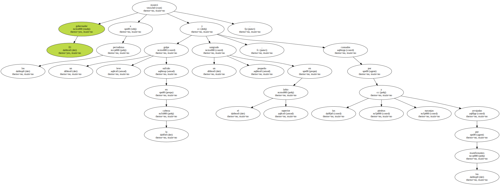
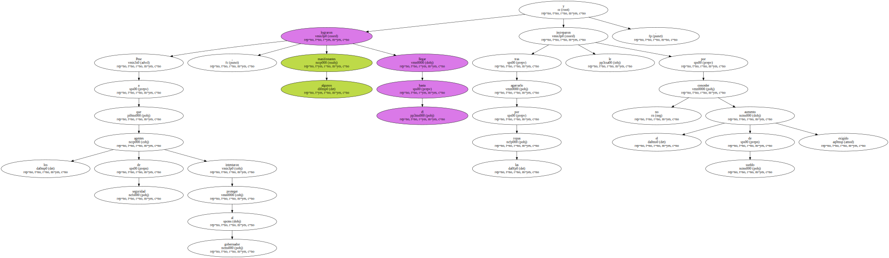
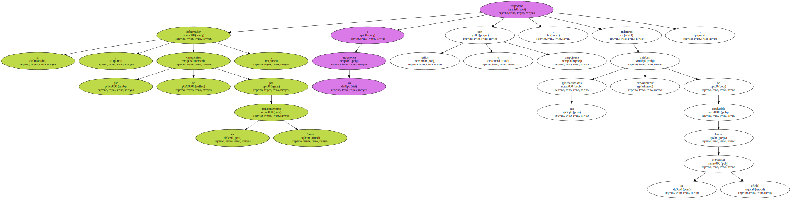
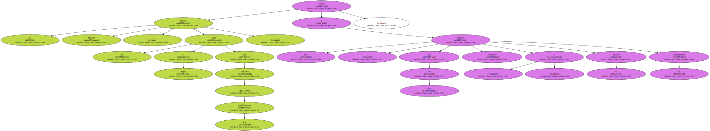
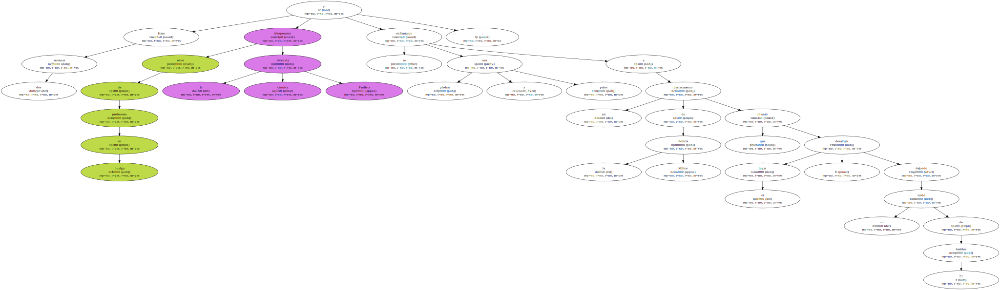

El gobernador mostró a los periodistas un golpe leve sufrido en la cabeza y un pequeño sangrado en el labio superior , causados por las piedras y naranjas arrojadas por los manifestantes.
Pese a que los agentes de seguridad intentaron proteger al gobernador , algunos manifestantes lograron llegar hasta él y tras agarrarlo por las ropas le increparon por no conceder el aumento de sueldo exigido.
El gobernador , que se caracteriza por su fuerte temperamento , respondió a las agresiones con gritos y empujones , mientras sus guardaespaldas trataban penosamente de conducirlo hacia su automóvil oficial.
Los profesores se irritaron con el gobernador porque ingresó en la Secretaría de Educación por la entrada principal del edificio , en cuyo frente estaban acampados , y decidieron esperar su salida para agredirlo porque consideraron el acto de Covas como una provocación , según algunos líderes de la protesta.
" Nada me va a impedir que entre en una Secretaría del Estado por la puerta del frente " , dijo Covas tras ser rescatado del tumulto por sus guardaespaldas.

La Policía Militar , que llegó al lugar para controlar a los manifestantes , arrestó a tres personas , dos de ellas profesores , y el tercero , un desempleado.
Hace dos semanas miles de profesores en huelga bloquearon la céntrica Avenida Paulista y se enfrentaron con piedras y palos a un destacamento de la Policía Militar que intentó desalojar el lugar , dejando un saldo de 21 heridos.
